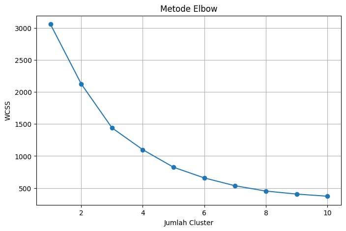
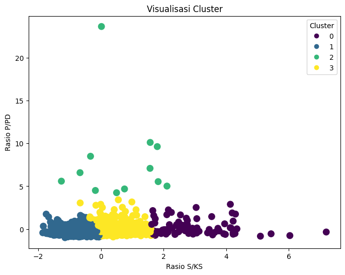

Pengelompokan 1.529 kabupaten/kota se-Indonesia berdasarkan rasio sekolah, kepala sekolah, pendidik, dan peserta didik (data Kemendikdasmen 2025) mengikuti kerangka CRISP-DM.
Model K-Means diuji dengan empat metrik evaluasi. Nilai Silhouette mendekati 1 dan Davies-Bouldin mendekati 0 menandakan cluster yang semakin rapat dan terpisah.
Dua grafik inti dari notebook analisis: penentuan jumlah cluster dan sebaran wilayah pada dua rasio utama setelah standardisasi.

WCSS turun tajam dari K=1 (3.058,0) hingga K=4 (1.099,2), lalu melandai — titik siku berada di k = 4.

Sebaran 1.529 wilayah (nilai rasio terstandardisasi). Cluster 2 (hijau) terpisah jauh dari tiga cluster lainnya.
Rata-rata rasio per cluster (centroid akhir model). S/P = rasio sekolah–pendidik · P/PD = rasio pendidik–peserta didik.
| Cluster | Jumlah wilayah | Rasio S/P | Rasio P/PD | Karakter |
|---|---|---|---|---|
| 0 | 90 | 0,179 | 0,439 | Rasio sekolah–pendidik tertinggi |
| 1 | 752 | 0,066 | 0,319 | Kelompok terbesar; rasio pendidik terendah |
| 2 | 12 | 0,108 | 3,057 | Wilayah khusus: rasio pendidik–peserta didik ±7–10× cluster lain — prioritas telaah |
| 3 | 675 | 0,099 | 0,382 | Profil menengah |
Catatan: Rasio S/KS dan Persentase KS bernilai sama di seluruh wilayah (1,0 dan 100%) sehingga tidak memisahkan cluster; pemisahan didorong oleh rasio S/P dan P/PD. Total: 90 + 752 + 12 + 675 = 1.529 baris. Cluster 2 berisi 12 baris data dari 11 kabupaten/kota (KAB. INTAN JAYA tercatat dua baris).
Seluruh 1.529 baris hasil clustering dari Dataset 2025.xlsx (Kemendikdasmen). Cari wilayah atau saring per cluster, lalu unduh hasilnya sebagai CSV.
| Kota/Kab | Rasio S/KS | Rasio S/P | Rasio P/PD | KS (%) | Cluster |
|---|
Dihitung ulang langsung dari dataset dengan pipeline yang sama seperti notebook (StandardScaler + K-Means k = 4, random_state = 42) — hasilnya identik dengan ringkasan di atas.
Lima langkah yang sama seperti pada notebook Project_Skripsi.ipynb dan dashboard Streamlit.
1.542 → 1.529 baris; 13 baris bernilai Infinity/NaN dihapus sebelum analisis.
Empat variabel rasio dibentuk: S/KS, S/P, P/PD, dan Persentase KS per kabupaten/kota.
StandardScaler menstandarkan fitur agar tidak ada variabel yang mendominasi perhitungan jarak.
K-Means dijalankan dengan k = 4 sesuai Elbow Method (WCSS: K1 3.058,0 · K4 1.099,2 · K10 372,5).
Silhouette 0,358 · Davies-Bouldin 0,84 · Calinski-Harabasz 905,9 · SSE (Inertia) 1.099,15.
Versi interaktif (unggah dataset, slider K, grafik & evaluasi otomatis) berjalan dengan Streamlit — dapat dijalankan lokal dengan streamlit run app_dashboard_skripsi.py atau di-hosting terpisah, karena GitHub Pages hanya melayani situs statis.